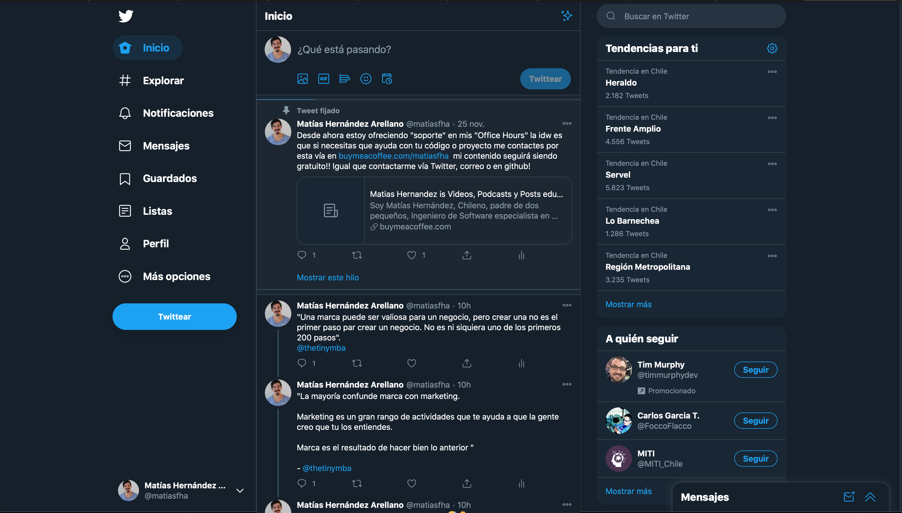
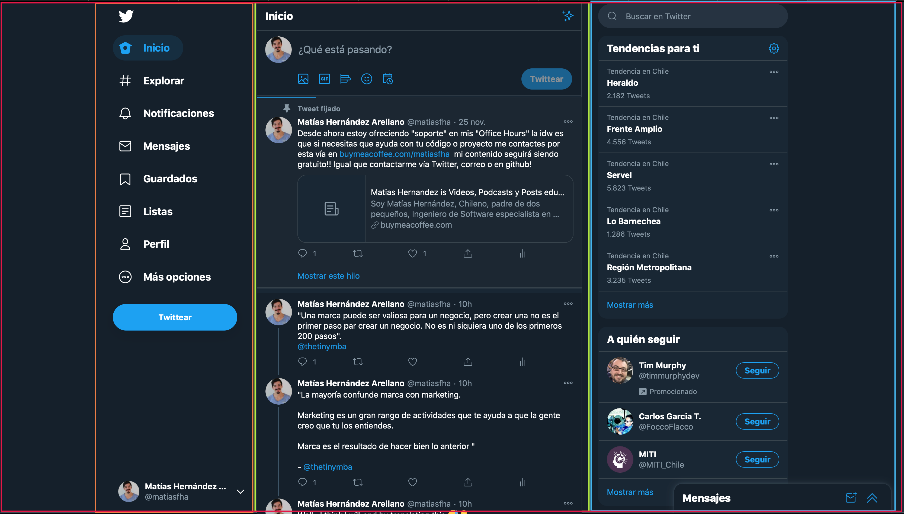
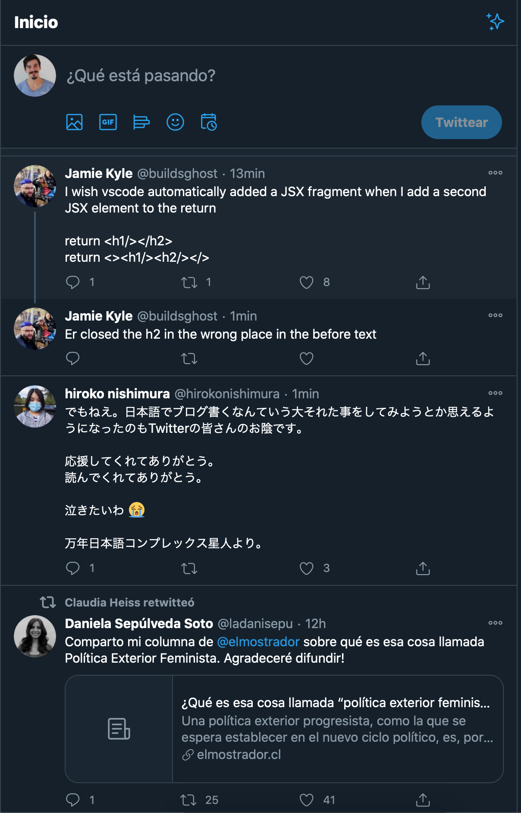
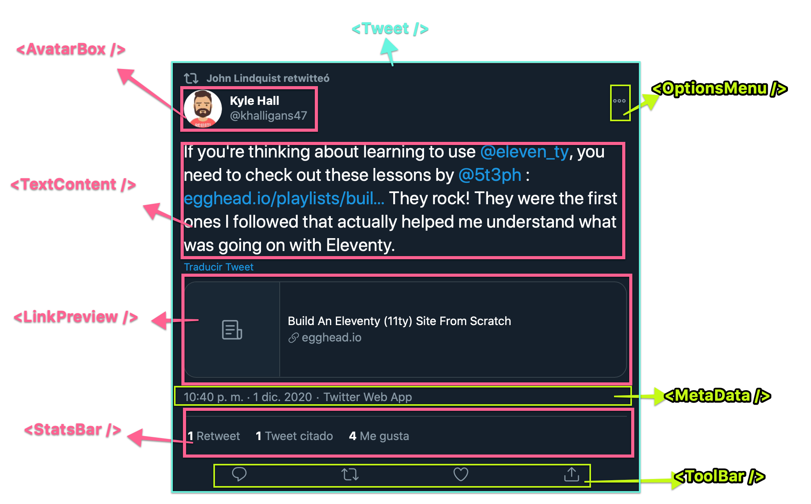

Pensando en React
Meetup: React Chile
1 👋 Hola!
- Matías Hernández
- Soy Ingeniero de Software
- 10+ al teclado
- 9+ de forma remota en 🇺🇸
- @matiasfha
|
|
|
|


2 👋 Hola!
We are hiring! https://moduscreate.com

Screencasts for badass developers https://egghead.io
Auth service for your JAMstack
3 👋 Hola!
4 Pensando en React
5 Pero antes
6 Que es React?
- Publicado el 2003, es una librería para crear interfaces de forma declarativa
- Implementó nuevas ideas sobre como crear aplicaciones web.
- Propone usar la composición de pequeñas y aisladas unidades para crear interfaces complejas.
- Propone utilizar un nuevo concepto: VDOM
- Define la interfaz como una función del estado
- Permite utilizar una forma declarativa para definir la interfaz.
- Propone una nueva sintaxis sobre Javascript.
- Permite su adopción de forma gradual.
7 ¿Qué necesito saber?
- Familiaridad con HTML y CSS.
- Conocimientos básicos de Javascript y programación.
- Entendimiento básico del DOM
- Familiaridad con caraterísticas y sintaxes de ES6+ (no excluyente)
- Node.js y npm instalados
8 ¿Qué es VDOM?
- Un concepto que define la creación de una representación ideal o virtual de la interfaz
- Esta representación es la que se manipula y se sincroniza con el DOM reconciliacion
- Permite indicarle a React en que estado se quiere la UI sin indicar como modificar el DOM.
- Permite el renderizado incremental del DOM (React Fiber)
9 Como funciona VDOM
- Al renderizar un componente, todos los objetos del VDOM son actualizados.
- React compara el nuevo arbol VDOM con el estado anterior y obtiene la diferencia
- Utiliza esta diferencia para actualizar el DOM solo en esos elementos
10 Ejemplo VDOM
11 ReactDOM
- React es la librería para crear interfaces de usuario de forma declarativa
- ReactDOM es el paquete que provee métodos específicos para la manipulación del DOM:
- `render()`: Renderiza un árbol de componentes.
- `findDOMNode()`
- `unmountComponentAtNode()`
- `hydrate()`: Equivalente a `render` pero utilizar en SSR.
- `createPortal()`
12 Componentes
- Una nueva forma de pensar en como construir una aplicaicón
- Primer paso es “dibujar cajas” para cada componente
- Es una habilidad básica y necesaria.
- Similar a como los diseñadores trabajan.
- Proceso mental que permite reconocer patrones y crear una arquitectura
Proceso sin código
13 Revisando Interfaz

Pensemos en como crear pequeños trozos reutilizables
14 ¿Qué es un componente?
- Trozos individuales de la UI
- Conjuntos lógicos de información
- “Cajas” reutilizables
15 Revisando Interfaz

16 Revisando Interfaz: Feed

17 Revisando Interfaz: Tweet

18 Revisando Interfaz: Tweet names

19 Hora de componer
- Se require un “algo” para sostener los componentes
- Este es también un componente: Padre
- El padre sirve también como pasarela de mensajes entre los hijos
20 ¿Cómo saber que es componente?
- Decision similar a crear una nueva función.
- Single Responsibility Principle
- Reusabilidad
- ⚠️ No optimices prematuramente
- ⚠️no crees abstracciones innecesarias
21 Relacion data y UI
- UI es la forma de comunicarse con el usuario
- UI es una representacion de los datos
- Divide tu interfaz en componentes donde cada componente represente una parte de los datos
22 Code time
23 Version estática
- Momento de convertir las cajas en código
- Hay varias formas de utilizar react
<script src="https://unpkg.com/react@17/umd/react.development.js" crossorigin></script>
<script src="https://unpkg.com/react-dom@17/umd/react-dom.development.js" crossorigin></script>
<!-- ADD JSX SUPPORT -->
<script src="https://unpkg.com/babel-standalone@6/babel.min.js"></script>
...
...
<script>
const domContainer = document.querySelector('#like_button_container');
ReactDOM.render(e(LikeButton), domContainer);
</script>
- CRA o CodeSandbox, etc
24 Sobre JSX
- JS permite manipular el DOM, por medio de APIs
- React es declarativo. No manipulamos el DOM directamente
- React ofrece una API para la creación de componentes
- React soporta múltiples plataformas una de ellas es el DOM mediante ReactDOM.
const rootElement = document.createElement('div')
rootElement.setAttribute('id','root')
document.body.append(rootElement)
const element = document.createElement('div')
element.textContent = 'Hola Mundo'
element.className = 'container'
rootElement.append(element)
25 El mundo sin JSX
const rootElement = document.getElementById('root')
const helloElement = React.createElement('span',null,'Hola')
const worldElement = React.createElement('span', { children: 'Mundo' })
const element = React.createElement(
'div',
{ className: 'container' },
helloElement,
' ',
worldElement
)
ReactDOM.render(element, rootElement)
26 JSX
- JSX es mas intuitivo que la api base de React.
- JSX -> Javascript XML.
- Y finalmente más fácil de leer y entender.
- JSX no es realmente JS. Requiere un transpilador.
const ui = <h1 id="greeting">Hey there</h1>
// ↓ ↓ ↓ ↓ compiles to ↓ ↓ ↓ ↓
const ui = React.createElement('h1', {id: 'greeting', children: 'Hey there'})
- Entrena tu cerebro para actuar como transpilador y ver la versión “cruda” de lo que escribes.
27 Arrays
- Renderizar un arreglo es un caso muy común.
const list = ['One', 'Two', 'Three']
//const listUI = list.map(listItem => <li>{listItem}</li>)
//<ul>{listUI}</ul>
const ui = (
<ul>
{list.map(listItem => (
<li>{listItem}</li>
))}
</ul>
)
28 Arrays
¿Qué ocurre si se hace agrega un nuevo elemento a la lista?
29 Ejemplo
30 Mas ejemplos
31 Next steps
Agregar interactividad mediante el uso de estado y comunicación con la api.
- Compartir el estado utilizando Context API
- Agregar Rutas
- CSS ¿Cómo?
- build & deploy
32 Me pueden encontrar
- https://matiashernandez.dev
- newsletter http://matiashernandez.ck.page
- Twitter @matiasfha
- Github @matiasfha https://github.com/matiasfha/ama
- hashnode y dev.to @matiasfha
- Comunidad Remota [controlremoto.io/comunidad](http://controlremoto.io/comunidad), devsChile y FrontendCafe
- y en [buymeaccoffee.com/matiasfha](https://buymeaccoffee.com/matiasfha) para suscribirse o reservar una hora de Office Hours
33 Preguntas